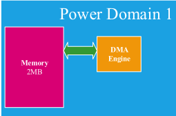
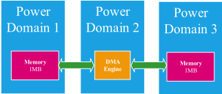
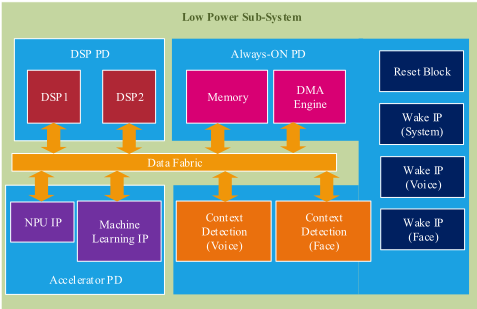
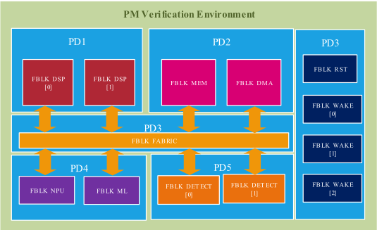
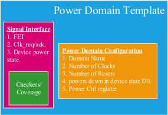
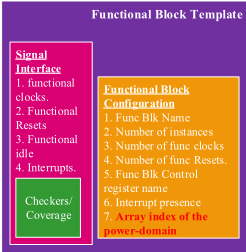
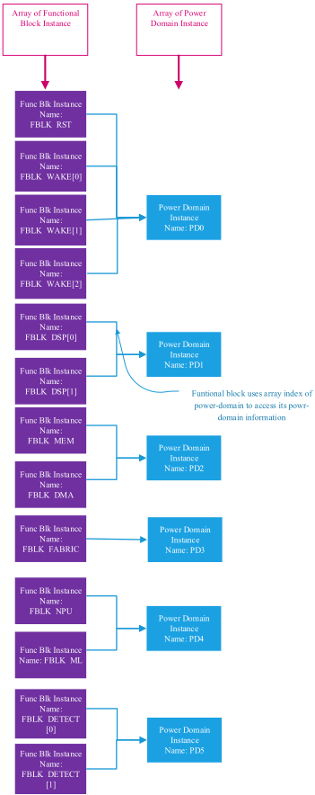
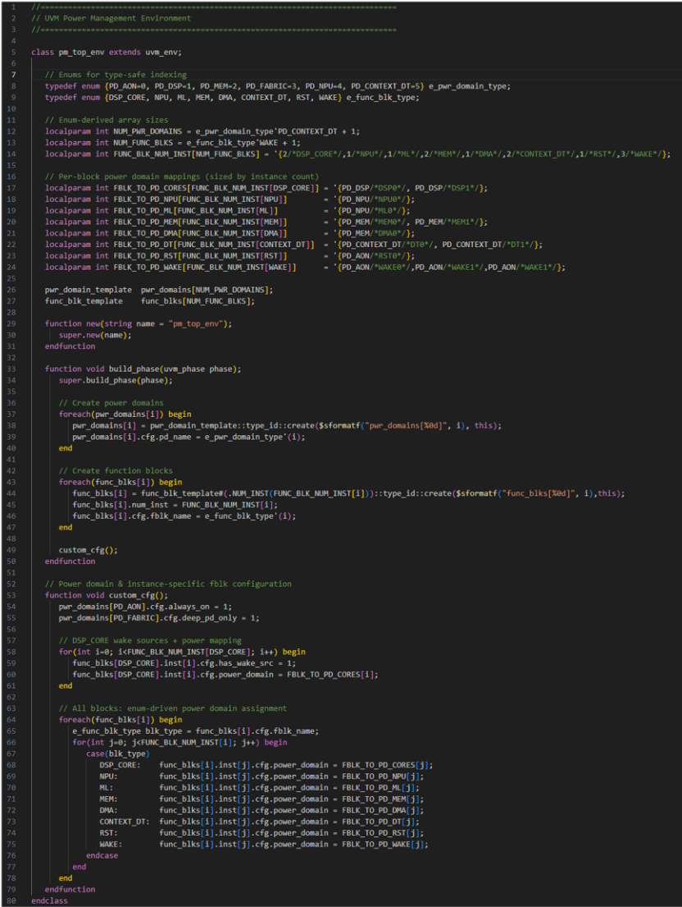
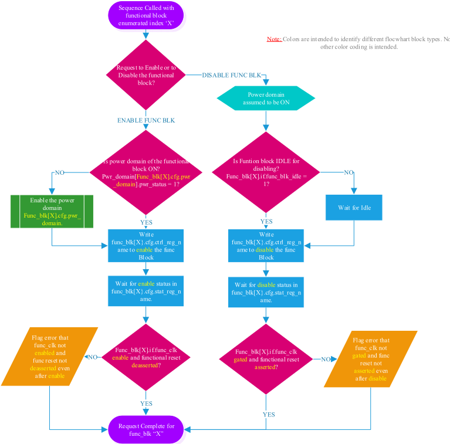
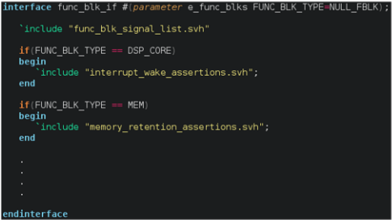

一种构建可扩展电源管理验证环境的方法
论文针对多电源域复杂设计中电源管理（PM）验证环境难以随架构调整而扩展的问题：传统验证环境把电源域与功能块硬编码耦合，架构师一旦在电源域之间迁移功能块或增删电源域，环境就需大规模重构。方法上，作者将电源域与功能块解耦为两类独立验证实体，分别建立 UVM 组件模板，用配置对象/旋钮刻画个体差异，以参数化 SystemVerilog 接口按需插入 checker 与 coverage；环境按 PD/FBLK 数组实例化并以数组索引维护 FBLK-PD 关联，激励采用以索引为参数的构建块序列，可组合出完整 PM 测试计划。该框架已在 Intel 某高度可配置子系统 IP（最多 15 个 PD、约 30 个 FBLK 实例）上连续用于四代 SoC，每次架构变更的环境重配置从过去一周半以上缩短到几天，每代 SoC 验证工作量减少三分之二。对团队而言，这是一篇可直接借鉴的 UVM 验证环境可扩展性方法学论文。
多电源域复杂设计的电源管理验证环境通常将电源域与功能逻辑硬编码耦合：验证工程师假设每个 PD 包含固定功能集合，并为每个 PD 定制验证组件。当架构师为达成功耗目标而把功能块在 PD 之间迁移、新增功能块或新增 PD 时，需要把功能相关代码从 PD 相关代码中剥离并重构环境，代价高昂且随架构变更次数呈指数级增长。
将 PD 与 FBLK 视为独立实体分别建模：为 PD 和 FBLK 各建一个通用 UVM 组件模板，模板带配置对象（configuration knobs，刻画个体差异）与虚拟信号接口（连接 power/clock/reset、idle-indicator、wake-request 等信号）；信号接口按配置参数化，从而按需插入或移除 checker/coverage（如仅当 FBLK 为带中断输入的 DSP 时插入中断 checker）。环境以 PD 数组与 FBLK 数组实例化，FBLK 通过记录所属 PD 的数组索引建立关联，配置变更时只需改索引；激励为以 PD/FBLK 索引为参数的构建块序列，可组合成复杂 PM 场景（含 PST 验证与 coverage）；checker/coverage 分为 PD、FBLK、Global 三类分别放置于接口或环境顶层。整个框架仅用 SystemVerilog 参数、模块、接口、断言、sequence 与基础 UVM 构造实现，并可向 Portable Stimulus 等方法扩展。
应用于 Intel 某高度可配置子系统 IP，最多支持 15 个不同 PD 与约 30 个 FBLK 实例，该 IP 跨多个功耗需求不同的 SoC 使用
每次 DUT 配置变更（PD 数量、FBLK 数量及 FBLK 在 PD 间位置变化）的 PM 验证环境重配置仅需几天，而过去至少需要一周半的环境修改与仿真 bring-up 工作量
当变更仅限于在 PD 之间移动 FBLK 时，仿真 bring-up 工作量几乎可以忽略
每代 SoC 的验证工作量减少三分之二（reduced by two-thirds）
该框架已成功用于该 IP 的四代产品，同组织内具有类似 PM 架构的其他 IP 已开始将代码迁移到该框架
区别于传统将 PD 与 FBLK 代码合并为单一整体式验证组件、并为每个 PD 定制组件的做法，本文提出把 PD 与 FBLK 作为独立实体分别建立带配置旋钮的通用模板，通过模板实例化适配每个 PD/FBLK，使功能块可在电源域之间自由迁移而无需重写验证代码；并以数组索引关联和参数化接口实现两个层级的可扩展性（PD/FBLK 数量扩展、同一 FBLK 多实例扩展，如 FBLK_DSP[0]/FBLK_DSP[1]），以及模板/断言修改自动作用于同类型所有实例。
相关度级别：high
命中能力域：2.4 设计验证方法学 | 2.7 EDA/验证自动化与 AI 辅助
理由：论文核心是基于 SystemVerilog/UVM 的验证环境可扩展性方法学，直接命中 2.4 的 UVM/SystemVerilog 验证平台与可复用验证组件技术；其模板化、配置化、可复用 collateral 的思路也契合 2.7 的验证流程自动化与可复用验证 IP。团队的高速存储/互连 IP（LPDDR5X、HBM4、UCIe 等）普遍包含多电源域与低功耗特性（clock gating、isolation、power gating、wake/idle 流程），且 IP 需跨多个 SoC 项目与客户配置复用，架构调整频繁；论文针对的'功能块在电源域间迁移导致环境重构'正是团队多项目交付中会遇到的典型工程场景，且论文给出了可量化的收益数据（重配置从一周半以上降到几天、验证工作量减少三分之二、四代复用），方法落地门槛低（仅需 SV 与基础 UVM 构造）。
建议动作：深入精读并做内部分享
Pranav Mopkar，英特尔公司（Intel Corporation），美国加利福尼亚州圣克拉拉（pranav.mopkar@intel.com）
摘要 - 为具有多个电源域的复杂设计创建电源管理验证环境是一项艰巨的任务，而使其具备可扩展性则更具挑战性。本文提出一种方法，用于简化一个由异构的多种功能与多个电源域混合构成的复杂系统的验证视图，从而创建可扩展的电源管理验证环境。
关键词 - 可扩展性、可扩展、流片前验证、电源管理验证、多电源域、多个电源域。
由于手持式电池供电设备的普及，最小化功耗的重要性日益提升，以具有多个电源域（PD）的复杂设计作为被测器件（DUT）的情况在设计验证中已变得越来越常见。架构师们一直尝试以比以往细得多的粒度为数字逻辑添加电源门控能力，以满足激进的功耗目标 [1] [2][3]。这导致即使在子系统级别也存在多个PD。
下面的图1和图2是架构师进行逻辑重构的示例。考虑一个设计“DUT 1”，它包含一个存储器块和一个用于将数据传入和传出存储器的直接存储器访问（DMA）引擎。IP客户可能认为这两个模块之间存在完全的依赖关系，从而决定将它们归入同一个PD。另一位客户可能需要一个设计“DUT 2”，将其中的存储器拆分为两个存储器，然后决定这两个存储器各自进入各自的PD。在这种情况下，每个存储器可能都需要该DMA引擎，因此可能需要将其放入一个自身独立的PD中。功能逻辑正是这样纯粹基于DUT中发生的结构性变更或定制而移动到不同PD中的。


电源管理验证工程师通常将DUT视为多个PD的集合。每个PD要么被假定包含一组固定的功能，要么完全不被考虑。针对DUT的这种视图而开发的验证环境（VE）反映了功能与PD之间这种硬编码的关联。然而，为了实现功耗目标，架构师经常决定将功能设计模块从一个PD移动到另一个PD。当验证工程师做出此类假设时，这些变更所需的环境改动可能导致彻底重构。
尽管存在多种不同的方法，例如[4]中所述的面向复杂电源管理（PM）设计的软硬件（HW/SW）协同设计，但正如[4]所得出的结论，PM流程和序列的验证在很大程度上仍依赖于流片前验证。那些将每个PD视为与PM逻辑紧密耦合的单一整体功能块的流片前PM验证环境（VE），正是按照这种视图构建的。
大多数PM VE在构建时往往包含功能逻辑依赖，例如功能时钟门控、空闲指示和唤醒条件，这些依赖与PD及其相关的PM资源深度集成，后者例如主干时钟门控、复位隔离、功能唤醒聚合、电源门控和唤醒流程。当需要通过在PD之间移动功能逻辑来重组逻辑、向现有PD添加新的功能逻辑或添加新的PD时，就需要投入大量精力来重新配置VE，以便将与功能相关的代码从与PD相关的代码中分离出来。我们相信，我们提出的框架采用可复用的配套组件和简单的配置设置，能够显著减少重新配置所需的工作量。
所提出方案的基本前提是将电源域（PD）与功能逻辑或功能块（FBLK）分离开来。这样，当 FBLK 在不同 PD 之间移动时，就能更容易地重新配置验证环境（VE）。我们还提出简化 PD 和 FBLK 的验证视图，以创建用于建模其电源管理（PM）影响的模板。这两个概念相结合，使我们能够创建一个电源管理 VE，该 VE 无论在 PD 和 FBLK 的数量方面，还是在任一 FBLK 所属 PD 发生变化的情况下，都具有良好的可扩展性。我们将使用 SystemVerilog（SV）结构（例如参数、模块、接口、断言和序列）以及一些基本的通用验证方法学（UVM）结构来解释该方法学。这表明该框架即使采用最基本的验证结构也能正常工作。进一步推广开来，诸如 Portable Stimulus 这类高级方法学也应当能够同样轻松地与我们的方法学配合使用。
本文建议将 PD 与 FBLK 视为彼此独立的实体，并为它们分别创建各自的验证组件。这与将二者合并为单一实体进行验证的传统做法不同。传统方法创建的是将 PD 代码与 FBLK 代码融合在一起的单体式验证组件，因而无法让我们在被测设计（DUT）的各个 PD 之间自由地迁移功能。
在大多数传统的电源管理（PM）验证方法中，通常会根据每个 PD 的功能为其定制创建专用验证组件。正是由于验证组件的这种定制化，传统方法阻碍了 FBLK 的可扩展性。我们必须将设计模块视为容纳 FBLK 的 PD，即一种与 FBLK 本身相互分离的独立组件。我们提议创建通用验证模板，一个针对 PD，另一个针对 FBLK。随后，便可利用这些模板及其配置旋钮，创建针对每个 PD 和 FBLK 量身定制的模板实例。这样，在执行架构重构时，验证环境的重新配置便具有更高的可扩展性和灵活性。我们使用 UVM 组件创建了这些模板，并将配置旋钮实现为这些模板的 UVM 配置旋钮。
PM architecture typically partitions the DUT into multiple PDs. These PD can request the central Power Management Unit ( PMU ) to switch on or gate their power. They can also request the PMU to ungate the clocks. Resets for each of these domains are released by the PMU at an opportune time. This interaction between the PDs and PMU is typically standardized. PD components can be created based on these similarities among the PDs. Figure 3 shows a moderately complex subsystem with multiple PDs, each of which houses one or more FBLKs. Figure 4 shows how the PDs from Figure 3 can be represented as instances of PD components named PD1, PD2, etc.
Every major functional feature of DUT, which is equivalent to an FBLK mentioned earlier, is typically contained within a top-level SV module instance for that feature. These top-level instances interact with the PD and PMU logics through inputs such as functional clocks and resets and through outputs such as idle-indicator and wake-requests. Because of these shared characteristics, it's possible to create a template for FBLKs in form of a UVM component for FBLKs.
Figure 4 shows how the FBLKs DSP, Memory, DMA engine, and Accelerator IPs, etc., in Figure 3 can be represented as different instances of a single FBLK component in the VE. Note that we can also create two-dimensional instances of FBLKs, such as FBLK_DSP[0] and FBLK_DSP[1] that are multiple instances of the same FBLK in the design. This will allow us to scale the verification collaterals for the same type of FBLK (DSP type in this case) when the number of instances of this FBLK increases in the future. We performed this type of two-dimensional structuring for Context Detection and Wake IPs as well as shown in Figure 4.


各电源域（PD）之间可能在多个方面存在差异。某些 PD（例如 DSP）可能将中断用作电源唤醒事件，而另一些 PD（例如互连结构）则可能仅在器件最深的电源状态下才被电源门控。在创建电源域组件时，我们应当能够将其用于所有电源域。每个电源域组件实例都关联有一个配置对象，其中包含用于配置这些差异的配置旋钮。对于功能块组件也采用了类似的方法。功能块组件拥有自己的配置对象，FBLK 之间的所有差异都可以在其中进行配置。
PD 模板以 UVM 组件的形式实现，拥有一个配置对象和一个虚拟信号接口。配置对象用于捕捉各 PD 之间的差异，并需要根据被测设计（DUT）的配置来赋值。信号接口连接到特定 PD 所对应的电源、时钟和复位信号。它还包含用于检查这些信号的检查器和覆盖率。接口根据配置设置进行参数化，从而使检查器和覆盖率能够随接口进行扩展。激励也可以使用该信号接口，从而以可扩展的方式实现自校验。图 5 展示了 PD 模板的示意图以及可作为该模板组成部分的各类元素。

FBLK 模板以 UVM 组件的形式实现，同样具有一个配置对象和一个虚拟信号接口。配置对象包含用于区分不同 FBLK 的各种可调参数（knobs）。配置帮助我们以可扩展的方式处理各 FBLK 之间的差异。每当 DUT 出现新的配置时，都需要对其进行更新。它还包含该 FBLK 所在 PD 的数组索引。信号接口连接到 FBLK 的信号，例如功能时钟（functional clocks）、模块使能（block enables）、functional-traffic-idle 以及中断。它还包含用于验证所连接信号功能正确性的检查器和覆盖率。接口可以根据配置值进行参数化。参数化接口帮助我们在各 FBLK 存在差异时插入或移除检查器/覆盖率。图 6 展示了 FBLK 模板的示意图以及可作为该模板组成部分的各类元素。在此示例中，仅当 FBLK 是带有 Interrupt 输入的 DSP 时，才会插入与中断相关的检查器。

使用电源域（PD）组件和功能块（FBLK）组件作为构建模块来创建环境。这包括为每个 PD 创建一个 PD 组件实例，并为每个 FBLK 创建一个 FBLK 组件实例。FBLK 依赖 PD 才能进入可操作状态。在 FBLK 中的任何资源可用于配置和操作之前，必须先接通该域的电源。这就要求 FBLK 拥有与其相关联的 PD 的信息。激励将利用这些信息使 FBLK 投入运行和退出运行。检查器也将利用这些信息来检查 PD 与 FBLK 之间的依赖关系，例如电源、时钟和复位。
PD 与 FBLK 之间的关联是通过为每个 FBLK 分配在被测器件（DUT）中容纳该 FBLK 的 PD 的数组索引来建立的。由于从一个 DUT 配置到另一个 DUT 配置时，FBLK 可能会在不同 PD 之间移动，因此每次配置变更时都必须执行此步骤，以使环境结构与 DUT 配置相匹配。当某个 FBLK 从一个 PD 移动到另一个 PD 时，传递给该 FBLK 的 PD 实例数组必须更改为新的 PD 实例。通过仅基于传递给 FBLK 实例的电源域数组索引来维护这种关联，我们显著简化了 DUT 配置发生此类常规变更时环境所需的修改。

图 7 展示了 FBLK 和 PD 如何以数组形式在验证环境（VE）中实例化。这使我们能够使用这些数组的索引来访问这些组件。这进而使激励具备可扩展性，正如激励章节中所解释的那样。图 8 展示了如何使用前文讨论的 FBLK 和 PD 模板，以 SystemVerilog（SV）和通用验证方法学（UVM）构造对 FBLK-PD 关联进行编码。

激励是利用我们迄今为止所创建的环境，通过基本构建块序列（building-block sequences）来创建的。这些构建块序列的示例类型如下：
这些序列被传入 PD 或 FBLK 数组的一个索引。这些序列仅基于该索引来创建激励。当我们希望该激励针对另一个 PD 或 FBLK 执行时，只需更改传递给序列的这个索引即可。随后，这些序列可用于创建更复杂的场景，以对电源管理（PM）功能进行彻底的验证。
图 9 展示了上述类型 #2 构建块序列的流程图。它还展示了 PD 与 FBLK 之间的关联如何在激励中发挥作用。该序列还使用了接口信号，如流程图中 func_blk[X].if.* 信号所示，以创建自校验（self-checking）激励。该序列是 PM 激励的基本序列之一，因为只需更改传递给序列的 FBLK 枚举索引 'X'，即可用它来使能/禁用任意 FBLK。我们可以为使能/禁用 PD 创建类似的序列，这些序列以 PD 枚举索引作为输入并生成所需的激励。

由于这些基本序列具有可扩展特性，复杂 PM 场景的创建被大大简化。它们可以与其他序列（例如器件状态改变序列和复位断言/去断言序列）组合，以执行整个 PM 测试计划。电源状态表（PST）的验证和覆盖率可以通过这些复杂序列来实现 [5]。
在本方法论中，检查器与覆盖率被分为三种类型：
PD 检查器与覆盖率包含典型的 PM 项目，例如电源门控、主干时钟门控、时钟切换和复位的时序要求。
FBLK 检查器与覆盖率涉及相关的 PM 项目：局部动态时钟门控、基于功能逻辑静止状态的唤醒请求生成，以及复位传播。
全局检查器与覆盖率是与不同 FBLK 和 PD 之间的交互相关的检查，这些交互使它们之间存在依赖关系。这些检查需要访问所有 PM 组件，才能构建所需的验证代码。
PD 和 FBLK 检查器/覆盖率被放置在 PD 和 FBLK 组件各自的信号接口中。信号接口是参数化的，因此所有可能的检查器和覆盖率都可以插入其中，然后在实例化 FBLK 接口时根据传递给接口的参数来使能。图 10 展示了一个基本的 SV 示例，说明如何将中断用作唤醒事件的检查器和存储器保持检查器放置在同一个 FBLK 接口中，并根据由该组件设置的接口参数 'FUNC_BLK_TYPE' 的值，为不同的 FBLK 组件选择性地使能。使用这种方法，还可以将自定义断言传递给 PD 组件内的接口。

全局检查器被插入到环境顶层类中，在那里它们可以访问所有 PD 和 FBLK。来自各个接口的信号以及一些额外的全局 PM 信号接口，可用于创建测试计划所需的任何复杂检查器。通过这种方法，可以以可扩展且可复用的方式向所有 PD 提供各种自定义检查器和断言，例如 [5][6] 中提到的那些。
每当被测设计（DUT）发生结构性变化、导致电源域（PD）与功能块（FBLK）之间的关联关系发生改变时，都需要对环境进行重新配置。这可能涉及添加新的 PD 和/或 FBLK。如图 7 和图 8 所示，所有这些更改都可以通过修改验证环境（VE）的参数，或通过修改 PD 与 FBLK 之间的关联关系，轻松地纳入环境之中。所有这些更改都可以以高度可扩展的方式完成，且只需最少的代码改动。仅就结构性变化而言，只有环境配置部分需要修改代码。任何 PD 和 FBLK 的更改都是在模板和断言上进行的，这使得更改会自动应用到该类型的所有 PD 和 FBLK 实例上。
例如，如果架构师决定将图 3 中的 DSP 核分离到各自独立的 PD 中，以便在它们空闲时能够单独对每一个进行断电，那么我们就需要将图 4 中的 PD1 拆分为 PD1_DSP0 和 PD1_DSP1，然后在图 8 中将两个 DSP 核实例的关联关系更改为新建的 PD。新的 PD 接口必须恰当地连接到设计中新建 PD 的信号上。如果我们当初把两个 DSP FBLK 实例的代码作为 PD 代码的一部分来编写，那么所需的改动就会复杂得多：需要将每个 DSP 实例的配套代码分离出来，再将这些分离出来的 DSP 代码插入到新的 PD 代码中。随着架构变更数量的增加，这类改动会呈指数级变得更加困难。
上一节所述的所有组件，即环境、激励以及检查器/覆盖率，协同工作，提供了一个高度可扩展的环境。该环境可以在 PD 和 FBLK 的主层级上进行扩展，也可以在这些模板的各个配置旋钮的次级层级上进行扩展。当需要 DUT 的新配置时，我们通过编辑环境配置来修改 PD 和 FBLK。我们在它们之间创建关联关系，以组装该环境。根据所需的 DUT 配置，各实例之间的差异被编码到相应的配置中。
我们采用这种方法为英特尔（Intel）的一个子系统 IP 创建了电源管理（PM）环境。该 IP 是一种高度可配置的 IP，最多可包含 15 个不同的 PD，以及约 30 个不同的 FBLK 实例。该 IP 被应用于多个具有不同电源需求的片上系统（SoC）中。从一代 SoC 到下一代，该 IP 的配置在 PD 数量、FBLK 数量以及 FBLK 在 PD 内所处位置等方面均发生了变化。每当出现此类变化时，我们都能在两三天内针对这些变化完成 PM 验证环境（VE）的重新配置。这主要涉及对环境配置的修改，而当变化仅限于在不同 PD 之间移动 FBLK 时，仿真搭建的工作量几乎可以忽略不计。在没有该框架的情况下，过去我们至少需要一周半的工作量来完成环境修改并重新进行仿真搭建。当需要修改 PD 和 FBLK 代码时，所节省的工作量更为可观。由于这两类环境组件之间存在清晰的分离，这些修改更容易进行，并且能够扩展到同一类型的所有实例。对于每一代 SoC，我们都将验证工作量减少了三分之二。我们已成功将该框架应用于该 IP 的四代产品。IP 部门中其他具有类似 PM 架构的 IP，也基于该框架已得到验证的价值，开始将其代码迁移到该框架上。
本文所提出的方法可应用于任何具有四个及以上 PD 且包含六个及以上 FBLK 的中等复杂度设计。复杂度越高，采用该方法所获得的可扩展性收益就越好。
尽管该方法是在子系统层面实现的，但它可以轻松扩展到 SoC 层面。如果 SoC 环境也基于该方法，那么 SoC 便可以复用 IP 配置来创建 SoC 配置和环境。
该方法仅介绍了基本框架的创建，并不打算为所有 PM 验证可扩展性问题提供一站式解决方案。更复杂的验证特性，例如 [5] 中所建议的那些，可以以该框架为基础来构建。